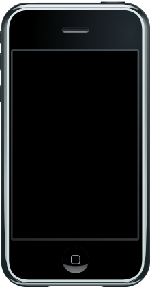

아이폰(영어: iPhone)은 미국 애플이 디자인하고 마케팅한 터치스크린 기반 스마트폰 계열이다. 애플의 iOS 모바일 운영 체제를 사용한다.
1세대 아이폰은 애플의 공동 창립자 스티브 잡스가 2007년 1월 9일 발표하였고 제품은 2007년 6월 29일 출시되었다.
그 뒤로 애플은 해마다 새로운 아이폰 모델과 iOS 업데이트를 출시해왔다. 2018년 11월 1일 기준으로, 2,200,000,000대 이상의 아이폰이 판매되었다.

아이폰의 사용자 인터페이스는 가상 키보드를 갖춘 멀티 터치 화면으로 구성된다.
아이폰은 셀룰러 망이나 와이파이에 연결되며, 통화, 웹 브라우징, 사진 촬영, 음악 재생, 이메일과 텍스트 메시지 송수신을 할 수 있다.
아이폰 런칭 이후 더 많은 기능들이 추가되었는데, 여기에는 더 큰 화면 크기, 동영상 촬영, 방수 기능, 앱 스토어를 경유한 서드파티 모바일 앱의 설치 기능, 접근성 지원이 포함된다.
2017년까지 아이폰은 전면 패널에 사용자를 홈 스크린으로 복귀시키는 하나의 버튼을 갖춘 레이아웃을 사용하였다.
2017년 이후로, 더 값비싼 아이폰 모델들은 제스처 인식에 의해 앱 전환 활성화가 가능한, 베젤리스에 가까운 전면 화면 디자인으로 전환하였다.
1세대 아이폰은 모바일 전화 산업 면에서 "혁명적인"(revolutionary), "게임 체인저"(game changer)라는 용어로 기술되었으며 차기 모델들 또한 찬사를 받았다.
아이폰은 스마트폰과 슬레이트 폼 팩터를 보급하는데 주된 기여를 하였으며 스마트폰 앱과 앱 경제를 위한 커다란 시장을 창출하였다.
2017년 1월 기준으로, 애플의 앱 스토어에는 아이폰을 대상으로 2,200,000개 이상의 애플리케이션이 포함되었다.
아이폰은 구글의 안드로이드와 함께 세계 최대의 2대 스마트폰 운영 체제 가운데 하나이다.